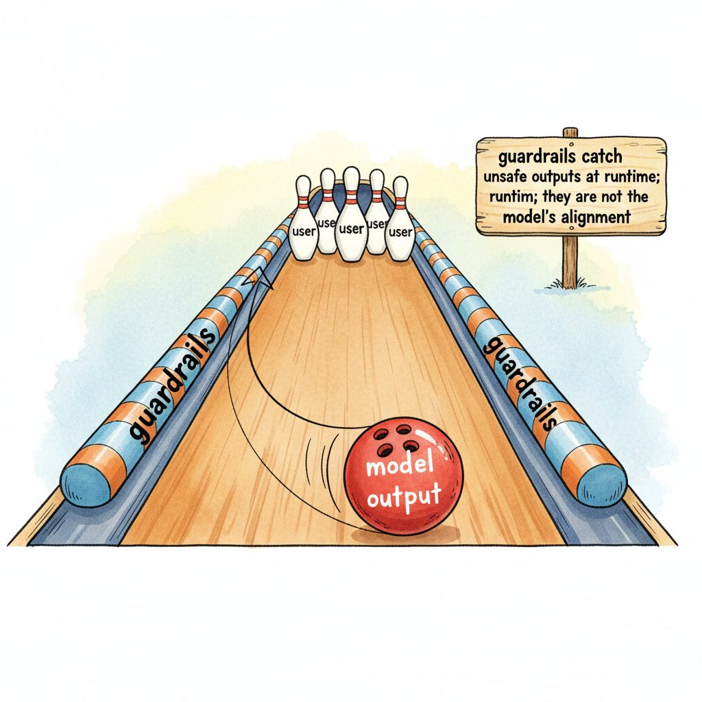

"Safety is not a feature you ship; it is a discipline you maintain."
Nancy Leveson, Engineering a Safer World, 2011
Guardrails are the runtime layer of LLM safety: external checks that sit around a model and intercept inputs, outputs, and intermediate tool calls. They are not a substitute for alignment training, not a substitute for evaluation, and not a substitute for a written policy. They are the only safety layer that runs during every single request. This section disambiguates the three terms that practitioners conflate (alignment, guardrails, evaluation), introduces the canonical three-layer safety model, and frames the rest of Chapter 48.
Prerequisites
This section assumes familiarity with LLM APIs from Section 11.1 and with LLM evaluation from Section 42.1. Familiarity with alignment training from Section 20.1 helps when distinguishing intrinsic from extrinsic safety.
48.1.1 The Three Layers of Safety
The Therac-25 radiation therapy machine in the 1980s was, in a horrible sense, the original safety case for layered defenses. Its software interlock was the entire safety system, and when it failed, patients died. Modern LLM stacks split safety across alignment training, runtime guardrails, and offline evaluation precisely because the field absorbed the same lesson: a single safety mechanism, no matter how clever, is a single point of failure. The annoying tradeoff is that "safety in depth" inevitably means three teams instead of one, and three budget lines instead of zero.
Imagine a self-driving car. The first safety layer is the driving model itself, trained on millions of hours of human driving so that it knows, intrinsically, not to drive into oncoming traffic. The second layer is a set of runtime constraints, lane-keeping assist, automatic emergency braking, a speed governor, that intervene if the model starts to do something dangerous. The third layer is an offline evaluation pipeline: closed-course tests, crash simulations, regulator audits. All three layers are necessary, and none replaces the others. LLM safety has the same structure.
In LLM systems, the three layers are:
- Alignment training shapes the model's dispositions. RLHF, DPO, Constitutional AI, and safety fine-tuning instill preferences for helpful, harmless, honest behavior into the weights themselves. This layer is set at training time and cannot be changed by the application developer.
- Guardrails are the runtime safety net. They are external programs that examine each prompt before it reaches the model and each response before it reaches the user, blocking, redacting, or rewriting anything that violates a configurable policy. Guardrails are deployed by the application developer and can be updated without retraining.
- Evaluation is the offline measurement. Red teams, automated benchmarks (HarmBench, JailbreakBench), and continuous probing pipelines test the combined system to find policy violations before they happen in production. Evaluation tells you whether layers 1 and 2 are working.
The crucial property is that the three layers are complementary, not redundant. Alignment gives you a baseline of good behavior. Guardrails enforce your specific policy, which is almost certainly stricter than the model's default. Evaluation closes the feedback loop. A startup that ships a chatbot with only alignment is trusting a foundation model trained on the whole internet to make their company-specific judgment calls about what's appropriate for their users. A startup that ships only guardrails has a brittle keyword filter wrapped around a model that will happily generate things their guardrails missed.

Guardrails are policy enforcement, not value alignment. The model has values (from alignment training). The application has policies (from the product team and legal). Guardrails translate the application's policies into runtime checks. If your policy says "do not discuss competitor pricing," that is a guardrails problem, not an alignment problem. If your policy says "do not generate CSAM," that is both an alignment problem (the model should refuse intrinsically) and a guardrails problem (you want defense in depth).
48.1.2 What Guardrails Are Not
The single most common mistake in safety architecture is using guardrails as a substitute for one of the other two layers. Three failure modes are worth naming explicitly.
Guardrails are not alignment. If a model has a strong intrinsic preference for following user instructions even when those instructions are unsafe, a guardrail can catch some, but not all, of the resulting outputs. Sophisticated jailbreaks (covered in Section 47.1) work by getting the model to want to comply with the attacker, at which point the guardrail is the only line of defense and the attacker's job is to find one prompt the guardrail misses. A well-aligned model puts up resistance even when the guardrail fails. The two layers reinforce each other.
Guardrails are not evaluation. A guardrail tells you whether a single request right now violates policy. An evaluation tells you whether your overall system, including the guardrail, has acceptable failure rates across thousands of representative requests. You cannot rely on production guardrail logs as your only evaluation because (a) you do not know what the guardrail missed, and (b) you do not know how often it false-positively blocked legitimate requests. The evaluation work in Chapter 42 is non-negotiable.
Guardrails are not policy. A guardrail enforces a policy. Writing the policy is a separate, harder problem. "Do not be offensive" is not a policy; it is an aspiration. A policy specifies enumerated categories (hate, harassment, self-harm, sexual content, weapons, illegal activity, regulated advice), severity levels, and exceptions (a mental-health chatbot needs to discuss self-harm to be useful; a children's app does not). The procurement workflow described in Section 54.6 is one place these policies get written down.
![Diagram of three-layer LLM safety stack. Bottom layer labeled 'Alignment Training (RLHF, DPO, Constitutional AI)' shaped like a foundation block. Middle layer labeled 'Runtime Guardrails (input filters, output filters, tool-call mediation)' shown as a wrapping shell around a central LLM. Top layer labeled 'Evaluation (red-teaming, HarmBench, continuous probing)' shown as a feedback loop arrow connecting back to both lower layers. A user icon enters from the left and an application icon exits to the right.](images/three-layer-safety.svg)
48.1.3 Input, Output, and Tool-Call Guardrails
Guardrails come in three flavors based on where they intercept data:
- Input guardrails run before the user's prompt is sent to the model. They detect prompt injection (Section 48.2), redact PII so it never enters the model's context, classify the request topic (off-topic? regulated? high-risk?), and rate-limit abusive senders. They are cheap to run because they operate on user input, which is bounded in size.
- Output guardrails run after the model produces a response, before it is returned to the user. They classify the response for harmful content (Llama Guard, ShieldGemma), check for hallucinations against a knowledge base, and enforce structural constraints (valid JSON, no leaked system prompt). Output guardrails are the most expensive layer because they must read the full generation.
- Tool-call guardrails run between the model's request to call a tool and the actual tool invocation. They are the most consequential because tool calls have real-world effects: sending email, transferring money, deleting files. Agent safety (Chapter 49) is largely a tool-call-guardrails problem.
A common architecture pattern is the guardrail bus: a central middleware layer through which all model interactions flow, with pluggable checks at each stage. This pattern keeps the safety logic in one place (audited, versioned, observable) rather than scattered across application code.
A guardrail that blocks 99% of unsafe responses and 0.1% of safe ones sounds good. Run the numbers at a million requests per day with a base rate of 0.01% unsafe content, and you get one hundred true positives, one hundred false negatives, and one thousand false positives. The user-visible failure mode of guardrails is almost always over-refusal, not under-refusal, and over-refusal destroys trust faster than the rare slip-up. Section 48.3 shows how to tune thresholds against your actual traffic distribution.
48.1.4 The Lifecycle of a Guardrail
A production guardrail moves through six stages, like any other piece of software, with a couple of safety-specific wrinkles:
Mental Health Pro, a 2024 consumer wellness app, walked their "no medical diagnosis" guardrail through all six stages in roughly 12 weeks. Stage 1 specification: "the assistant must not affirm a clinical diagnosis." Stage 2 test set: 487 labeled prompts (310 safe wellness questions, 177 disguised diagnosis-seeking prompts, hand-labeled by two licensed therapists). Stage 3 implementation: a single Llama Guard 3 prompt template, F1 0.82, latency 110ms p95. Stage 4 calibration: threshold raised to 0.7 so the false-positive rate dropped from 18 percent to 6 percent, accepting a 4-point recall drop. Stage 5 logging: every decision tagged with policy v1.3, used to backfill the test set with 41 production false positives in week 9. Stage 6 refinement: classifier retrained on the expanded set, policy v1.4 shipped, F1 climbed to 0.89 with the same latency. The wrinkle that matters: without the policy version tag from stage 5, the team could not tell whether the v1.4 win was real or a measurement artifact.
- Policy specification. The product team, legal, and a domain expert write down what the guardrail should enforce. Concrete examples beat abstract principles.
- Test set construction. Before implementing anything, build a labeled set of pass and fail examples. Without a test set, you cannot measure whether the guardrail works.
- Implementation. Choose the cheapest mechanism that meets the accuracy target. Regex first, then a small classifier, then a large LLM-as-judge. Each step up the ladder costs latency and money.
- Threshold calibration. Pick the operating point on the precision-recall curve that matches your risk tolerance. A medical-advice filter should err toward false positives; a creative-writing tool should err toward false negatives.
- Deployment with logging. Every guardrail decision is logged with the input, the verdict, the confidence score, and the policy version. These logs are the substrate for the next round of evaluation.
- Continuous refinement. Red-team reports, user-submitted false positives, and new attack patterns get back-ported into the test set, and the cycle repeats.
Step 2 happens before step 3. Most companies invert this order: someone writes a regex on a Friday afternoon and ships it. Without a test set, you cannot tell whether your "fix" fixed anything or just shifted the failure mode to another corner of the input space.
48.1.5 Cost, Latency, and the Budget for Safety
Every guardrail check adds latency and cost. A naive deployment that runs an input classifier, an output classifier, a hallucination check, and a structured-output validator can easily double the end-to-end latency of an LLM call and triple its cost. The art of guardrail engineering is choosing which checks to run, in what order, and how to fail fast.
Three patterns are essential:
- Cascading checks. Run the cheap check (regex, small classifier) first; only escalate to the expensive check (LLM-as-judge) if the cheap one is uncertain. Confidence thresholds determine the escalation rate.
- Parallel checks. Run independent checks (PII redaction, jailbreak detection, topic classification) in parallel using async I/O, so the wall-clock latency is the maximum of the individual latencies, not the sum.
- Streaming checks. For output guardrails, run the classifier on the streaming response as it is being generated, and cut the stream as soon as a violation is detected. This both saves tokens and improves user perceived latency.
For a typical chat application targeting 2-second p50 latency: budget ~50ms for input guardrails (one classifier plus PII redaction), ~100ms for output guardrails (Llama Guard 3 on a small GPU), and ~10ms for structured-output validation. The input check runs synchronously on the user's request; the output check runs in parallel with response streaming. Total overhead: ~150ms, about 8% of the latency budget. Spending more than 15% on guardrails usually means the architecture needs revisiting.
48.1.6 What This Chapter Covers
The remaining sections of Chapter 48 walk through each layer in order:
- Section 48.2: Input Guardrails. Prompt-injection detection (Prompt Guard, Llama Guard), PII pre-filtering with Microsoft Presidio, regex baselines, and the trade-offs between classifier-based and LLM-based detection.
- Section 48.3: Output Guardrails. The four major platforms: Llama Guard 3, NeMo Guardrails, ShieldGemma, and Guardrails AI. Architecture, when to use each, and an integrated worked example.
- Section 48.4: Policy DSLs and Constrained Decoding. NeMo Colang, Outlines, and Guardrails AI Pydantic schemas. Structured output as a safety mechanism.
- Section 48.5: Multimodal Guardrails. Image, audio, and video content filtering with Microsoft Content Safety, AWS Rekognition, and Vertex AI; image-input prompt injection as a new attack surface.
Cross-references to neighboring chapters: agent-specific tool-call guardrails are in Section 49.1; privacy-specific guardrails for differential privacy and machine unlearning are in Section 50.1; the broader tools-of-the-trade survey for safety stacks is in Section 51.2.
Guardrails are the runtime layer of a three-layer safety architecture (alignment, guardrails, evaluation). They are policy enforcement, not alignment, and they require evaluation to verify they work. Production guardrails intercept inputs, outputs, and tool calls, run in cascading and parallel patterns to fit a latency budget, and are paired with a labeled test set that drives continuous refinement. The single most important design decision is choosing which checks belong in the guardrail layer versus which belong in the model, the policy, or the evaluation pipeline.
Show Answer
Show Answer
Show Answer
Show Answer
Continue to Section 48.2: Input Guardrails: Prompt-Injection Detection and PII Pre-filtering.
Section 48.2 zooms into the input layer: how Prompt Guard, Llama Guard, and Presidio detect prompt-injection patterns and PII before they reach the model. We will see why a naive regex catches 60% of attacks and why a transformer classifier catches 95%, and we will build a layered input filter that combines both.
For the deep treatment of adversarial attacks (prompt injection, jailbreaks, indirect injection) that guardrails defend against, see Section 47.1: Adversarial Attacks and Threats. For the agent-safety variant where guardrails enclose tool calls and not just text outputs, see Section 49.1: Agent Safety. For the RLHF and DPO alignment work that produces the inner-aligned models guardrails complement, see Section 18.1: RLHF and Preference Optimization.